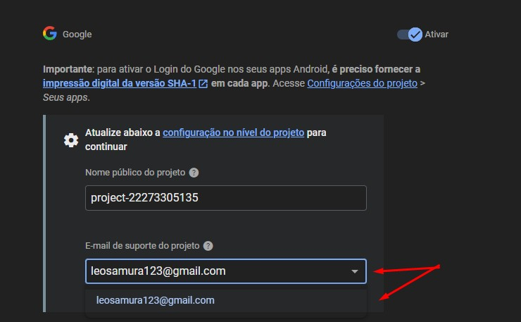
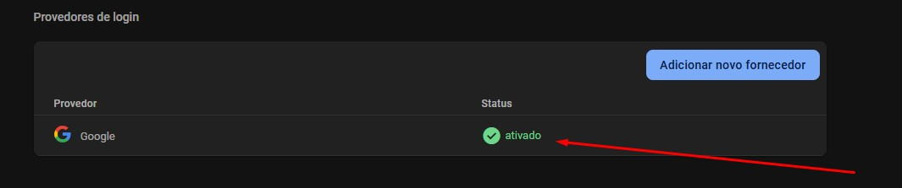

<section class="firebase-guide">
  <div class="content-wrap">
    <header class="header">
      <h1>Complete Guide: Firebase Authentication</h1>
      <p class="subtitle">Firebase Sign-in Configuration</p>
    </header>
 
    <article>
        <h2>Step-by-Step Configuration</h2>
        <h3>1. Access Firebase Console</h3>
        <p>Go to the Firebase website and log in with the account used for the project.</p>
        <p>Click "Authentication" (or "All services" if not visible) and then "Get Started".</p>
        <div class="image-container">
            
        </div>

        <h3>2. Choose Provider</h3>
        <p>Select Google as the authentication provider.</p>
        <div class="image-container">
            
        </div>

        <h3>3. Configure the Linked Gmail</h3>
        <p>Activate the Google provider using the switch.</p>
        <div class="image-container">
            
        </div>
        <p>Select the desired email from the dropdown. If multiple appear, choose one and provide a name related to the project for better organization.</p>
        <div class="image-container">
            
        </div>

        <h3>4. Completed</h3>
        <p>The final screen should show that Google Authentication is enabled.</p>
        <div class="image-container">
            
        </div>
    </article>
  </div>
</section>
 
 
 